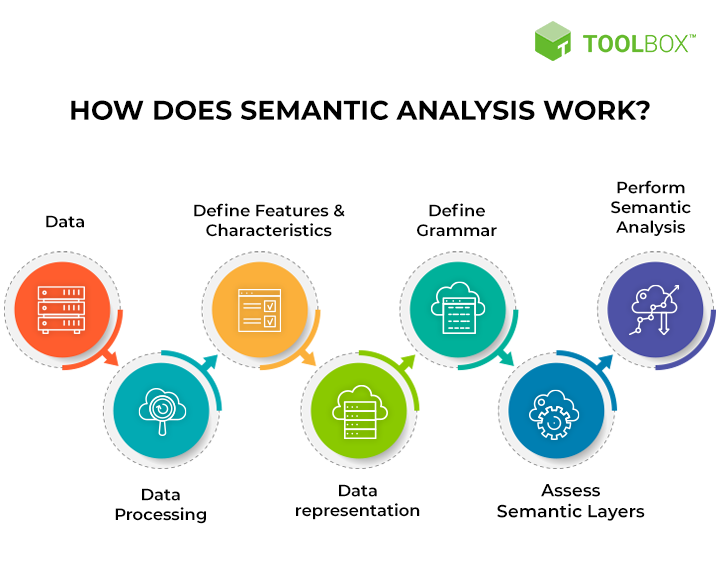
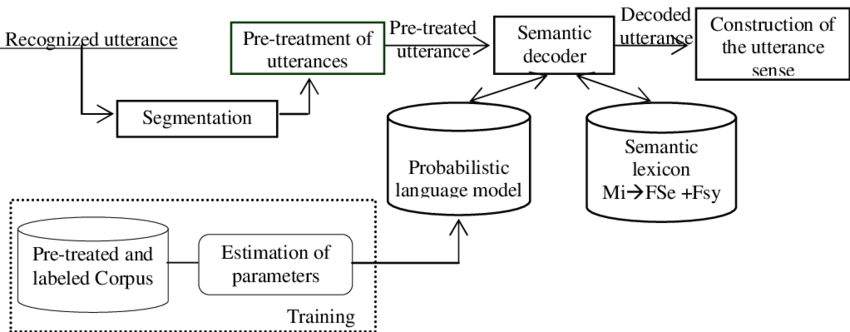

A semantic analyzer is an essential component of a compiler that checks the syntax and structure of a program's source code to ensure that it follows the rules of the programming language. Its primary function is to ensure that the program is semantically correct, which means that it will behave as intended when executed. The semantic analyzer performs a deeper analysis of the program's code than a syntax checker, which only checks for correct spelling and punctuation. The semantic analyzer checks for correct usage of language constructs, such as correct data types, variable declarations, and function calls. It also checks for compatibility between different parts of the program, such as the return type of a function and the type of variable that stores its return value.
- Type checking: The semantic analyzer checks that the data types used in the program are compatible with the operations performed on them. For example, it checks that you are not trying to add a string to an integer.
- Scope checking: The semantic analyzer checks that the variables and functions used in the program are declared in the correct scope. It ensures that you are not trying to use a variable or function that is not defined or is out of scope.
- Declaration checking: The semantic analyzer checks that the variables and functions are declared before they are used in the program. It ensures that you are not trying to use a variable or function before it is defined.
- Function signature checking: The semantic analyzer checks that the arguments passed to a function match the function signature. It ensures that you are not passing the wrong number or type of arguments to a function.
- Return type checking: The semantic analyzer checks that the return type of a function matches the type of variable that stores its return value. It ensures that you are not trying to assign the return value of a function to a variable of a different type.
In short, the semantic analyzer performs a deeper analysis of the program's code to ensure that it is semantically correct and will behave as intended when executed.

